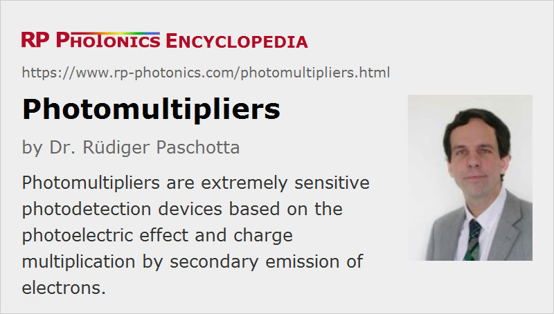

Photomultipliers
Acronym: PMT
Definition: photodetection devices based on the photoelectric effect and charge multiplication by secondary emission of electrons
More general term: photodetectors
German: Photomultiplier
Categories: photonic devices, light detection and characterization, optoelectronics, optical metrology
How to cite the article; suggest additional literature
Author: Dr. Rüdiger Paschotta
Photomultipliers (sometimes called photon multipliers) are a type of photoemissive detectors which have a very high sensitivity due to an avalanche multiplication process, and also exhibit a high detection bandwidth.
Construction and Operation Principle of a Photomultiplier
The Tube
A photomultiplier contains various parts in a vacuum glass tube, in which the following happens:
- Light is absorbed on a photocathode and generates free photoelectrons (external photoelectric effect).
- The electrons are subsequently accelerated with a high voltage (hundreds of volts) to a first dynode (an electrode), where they generate several secondary electrons. Those are accelerated towards further dynodes, where the number of electrons is getting several times larger each time.
- Finally, a strongly amplified photocurrent is collected with an anode near the last dynode.
Figure 1 shows a typical design (box-and-grid design) of a photomultiplier tube, exhibiting a high electron collection efficiency. A focusing electrode directs most photoelectrons to the first dynode. The voltage between two subsequent dynodes is e.g. 100 V, also between the last dynode and the anode. The dynodes have a surface which is optimized for the emission of secondary electrons – usually a semiconductor like AgMgO, SbCs3, GaP, GaAsP, BeO or oxidized copper with some beryllium.
There are various other electrode designs for photomultiplier, which can be optimized concerning various aspects like electron collection efficiency, maximum output current, uniformity of response over a large active area, detection bandwidth and sensitivity to magnetic fields, for example. For example, one can use specially curved focusing electrodes, which reduce the spread of electron transit time for a minimum rise time and maximum bandwidth. There are certain trade-offs, and therefore one uses different designs such as box-in-grid, circular, linear-focused, venetian blind and mesh, depending on the requirements for a specific application.
Some multipliers are head-on devices as shown in Figure 1, where the light enters the roughly cylindrical tube on one of the flat faces. For those devices, one needs transmissive photocathodes. There are also side-on photomultipliers, where a reflective photocathode can be used.
The glass tube of a photomultiplier has a substantial number of contact pins for all the electrodes on one side, with which it can be inserted into a suitable socket.
A very compact form of photomultiplier tubes are microchannel photomultipliers (MCPs = microchannel plates). These contain a large number of very narrow channels, only e.g. 1 mm long, in which the electron amplification occurs. They can exhibit a particularly high detection bandwidth.
In any case, one needs to maintain a high vacuum (typically between 10−6 Pa and 10−4 Pa) in a photomultiplier tube.
The Voltage Supply
A photomultiplier tube requires a whole sequence of different electrical potentials in order to have an appropriate voltage (of the order of 100 V) between the photocathode and the first dynode, between each pair of dynodes, and between the last dynode and the anode.
One normally uses a resistive voltage divider for generating all the required voltages. It is then sufficient to supply a single high voltage of the order of 1 kV to the voltage divider chain. That can be generated from a low supply voltage with a DC-to-DC converter, or alternatively with a moderately complex power supply at the grid.
The operation voltage should be very stable, for example with little temperature dependence, since it sensitively affects the gain. It also should not exhibit any significant ripple or other noise.
Due to the resistors, the device draws some current even without any light input, where the output current is close to zero. For good signal linearity, the current through the voltage divider train should be at least 10 to 20 times larger than the maximum possible output current. This solution is of course not very power-efficient.
Modified voltage dividers can also contain Zener diodes, which are most frequently applied for the last few dynodes. Having a rapidly increasing conductivity above a certain threshold voltage, they can be used to stabilize a voltage level. They also produce some noise, particularly in case of low currents, which however can be mitigated with a parallel capacitor.
One also often uses capacitors in parallel to resistors in order to stabilize the voltages in case of pulse detection.
The voltage divider may conveniently be placed in the socket into which the multiplier tube is inserted. It is only that it may somewhat heat the tube, which is detrimental concerning dark current.
There are also relatively compact sockets with an integrated high voltage power supply, which only need to be supplied with a moderate operation voltage from outside.
A substantially more power-efficient solution than the mentioned voltage divider chain is a Cockcroft–Walton voltage multiplier, which consists of two sequences of capacitors connected with a ladder of silicon diodes. It is driven with an alternating voltage and naturally provides the required set of stable dynode voltages. It can be electronically regulated to produce a precisely constant voltage. A disadvantage is only that it can be not as compact is a simple voltage divider chain with resistors.
Output Signal; Cathode and Anode Potentials
The anode current is often sent into a load resistor in order to convert it to an output voltage. That should usually be a voltage against ground potential. The electrical circuit is therefore often made such that the anode stays close to ground potential. The photocathode then needs to be at a strongly negative potential, which is problematic in some cases, e.g. when grounded parts need to be placed close to the cathode. Therefore, one sometimes uses a photomultiplier with grounded cathode, where the anode is operated at a high positive potential. One may then have to insert a capacitor into the output signal line, which then allows only for AC detection.
Instead of a load resistor, one may also use a current amplifier based on an operational amplifier. However, the details of signal processing are less critical than for photodiodes, for example, since the output signal is pretty strong and therefore less sensitive to noise influences.
Gated Operation
In some cases, one requires gated operation, where the detector is made sensitive only at certain times where a signal is expected. It should then be completely insensitive to even much stronger signals coming at all times. That can be accomplished by switching the cathode potential. As soon as it is made more positive than that of the first dynode, the flow of electrons to that dynode is blocked.
Properties of Photomultipliers
Gain and Responsivity
Due to the avalanche process, the photocurrent can be orders of magnitude higher than that, e.g., of a photodiode. In other words, the responsivity can be orders of magnitude larger than e.g. for an ordinary phototube without electron multiplication. Therefore, photomultipliers can be used for, e.g., photon counting; the current pulse created by a single photoelectron is large enough to be easily detected.
Quantum Efficiency and Noise
The quantum efficiency of a photomultiplier essentially depends on three factors:
- As for any photoemissive detector, the key factor is the quantum efficiency of the photocathode. Depending on the material and the optical wavelength of the detected light, it may be several tens of percent or much lower, sometimes below 1%.
- The used optical window material and its thickness limit the spectral range with high transmissivity. There can also be surface reflections, which can be minimized with an anti-reflection coating.
- Another factor is the electron collection efficiency; some electrons may be lost on the way to the first dynode (where it matters more than for later stages). The collection efficiency depends on the electrode geometry and operation voltage; it can be close to 100% for optimized designs, but can be well below 80% for others.
A small quantum efficiency is not a severe problem in terms of responsivity, because the electron gain can be very high. However, the random loss of some fraction of the photons amounts to detection noise. In addition, there is some multiplication noise: the number of secondary electrons (particularly on the first dynode) exhibits some fluctuations.
Dark Current
The dark current is the output current at the anode without any light input. Various effects can contribute to the dark current:
- At very low operation voltages, the dominant (but usually very weak) contribution is the leakage current due to non-perfect electrical isolation.
- For operation with normal voltages, the dark current from thermionic emission – mainly from the photocathode and the first dynode – is dominant. It rises substantially with increasing operation voltage, just as the rise of gain. Thermionic emission can be substantial for cathode materials with very low work function, as required for infrared detection. It is also strongly temperature-dependent; low-temperature operation is thus a very effective measure for reducing the dark current.
- For quite high operation voltages, there can be a steeper rise of dark current due to field emission at various locations in the bulb. That regime should be avoided, since it leads to accelerated aging.
- Some current is contributed by the ionization of residual gas.
- Some minimum amount of light can be produced by scintillation, e.g. when electrons hit the glass tube.
- At a usually very low level, there are weak flashes of light caused by cosmic rays and radioactive substances e.g. in the glass tube or the near surroundings.
The dark current is usually very small, but it limits the ability to detect very weak light.
Note that the lowest dark current is achieved when the device has been kept incomplete dark conditions for a while, for example for an hour. It may be substantially higher for some time after exposure of the photocathode to brighter light.
Dynamic Range and Linearity
Photomultipliers generally have a very large dynamic range, e.g. of 80 dB. Typically, it is limited at the lower end by the dark current (or by electronic noise) and at the higher end by a loss of linearity.
The linearity of response can be very good over several orders of magnitude, but can be limited by the following factors:
- The voltages delivered to the single electrodes by the voltage divider network will not stay stable when the output current gets large. As a rule of thumb, linearity starts to suffer when the output current exceeds 5% to 10% of the current through the voltage divider network, is assuming that it consists of resistors. A possible countermeasure is to use smaller resistors, increasing the current, which however increases the power consumption and may lead to heating of the tube. Alternatively, one may use Zener diodes (with parallel capacitors for reducing noise) for the last few dynodes, as explained above.
- Particularly for the detection of pulses, one can have space charge effects: accumulated electrons on the last few dynodes repel further electrons, thus reducing the output current. In some cases, the finite conductivity of the photocathode is the limiting factor, e.g. for operation at very low temperatures, where the conductivity of a semiconductor gets low.
Active Area and Uniformity of Response
The active area of a photomultiplier can be fairly large. A special property compared with other photodetectors, for example photodiodes, is the combination of a large active area with a high detection bandwidth and low noise.
The uniformity of response, which is important for some applications, differs very much between different designs. Note that even if the photocathode itself has a very uniform response, the collection efficiency of electrons can substantially depend on the position. There are optimized electrode designs (e.g. the Venetian blind type) for a high and uniform collection efficiency. Head-on devices are tentatively offering better uniformity of response.
Detection Bandwidth
The transit time of electrons is fairly small (between a few nanoseconds and some tens of nanoseconds), and more importantly it exhibits a relatively small spread – depending however on the electrode design. A substantial part of the transit time sprayed results from different electron trajectories for different starting points of electrons on the photocathode; it will therefore be larger when illuminating the whole cathode, compared with using a focused input beam. With a standard design, the spread of transit time and consequently the rise time of the output signal may be larger than 10 ns, but with optimized electrode designs it can be far below 1 ns. Therefore, the detection bandwidth can be several gigahertz.
Note that the transit time scales inversely with the square root of the applied voltage; high operation voltages also reduce the transit time spread.
Signal Drifts
Apart from effects of long-term liquidation, they are also the signal drifts over shorter time scales. For example, if the device has seen some high light level for a while, and the light level is then suddenly reduced, the output current may somewhat change within minutes. Also, the dark current may be significantly higher than after a while of keeping the device in the dark.
Secondary Pulses
Detecting pulsed signals, one may obtain some additional week after-pulses slightly after the actual signal pulses. That can result either from electrons which bounce off the first dynode, or from positive ions, which are generated from the residual background gas by the intense output current, are accelerated to open electrode and generate secondary electrons there.
Operation Voltage
The required operation voltage as an input to the voltage divider chain is usually of the order of 1 kV. It influences various performance parameters, particularly the gain, but also the bandwidth and the noise level, and even the lifetime.
Sensitivity to Magnetic Fields
Photomultipliers are relatively sensitive to magnetic fields, as occur in some environments, because those influence the electron trajectories. However, that sensitivity depends substantially on the device design. A relatively low sensitivity is achieved with microchannel plates, which may be used even in strong fields of several teslas, while more conventional designs are disturbed already by fields well below 1 mT.
Lifetime
In principle, the lifetime of a photomultiplier tube can be very long – tens of thousands of hours. However, premature death may be caused by several circumstances:
- Photomultipliers can easily be damaged by mechanical shock, e.g. at the high-voltage feedthroughs through the glass.
- Also, a photomultiplier should never be exposed to too intense input light (e.g. to daylight), even when being switched off.
- For operation with high anode currents, degradation of the dynode system can occur. This essentially means a loss of gain over time.
- The photocathode may exhibit some aging due to bombardment with positive ions, which it attracts. This means a drop of cathode sensitivity.
- Depending on the used glass material (particularly for silicate glass), helium can leak into the tube. Even the low partial pressure of ≈0.5 Pa in the atmosphere can during several years lead to the build-up of a similar helium pressure inside the tube. That can lead to a performance degradation, for example the formation of after-pulses, and at higher levels (for tubes operated in a helium-rich environment) even to complete damage.
- Operation at reduced air pressure (particularly between 100 Pa and a few hundred Pa) can lead to electric discharges at the socket, which can also damage the tube.
- For cooled operation, there can be problems with moisture causing electric discharge, or with damage related to thermal expansion.
- For operation in high radiation environments (e.g. nuclear reactors or in spacecrafts), there are various additional degradation mechanisms, apart from direct performance degradation e.g. concerning dark current.
Housing
A photomultiplier tube may be placed in some housing which can have several important functions:
- mechanical protection
- shielding against unwanted stray light
- shielding against electric and possibly also magnetic fields
- cooling of the tube for reduced dark current, and keeping moisture away from it to avoid condensation
- providing space for additional electronics, for example a high voltage power supply and a signal amplifier
There are photomultiplier modules which come with such a housing, which can also contain a power supply, additional amplifier electronics and the like.
Position-sensitive Detectors
There are special versions of photomultipliers which can be used as position-sensitive detectors. One possibility is to use multiple anodes and to process the outputs separately. Another approach is to connect multiple anodes to a network of resistors and probing currents only at two sides; the relative difference of photocurrents is then a measure for the position of an input beam. That operation principle is essentially the same as for semiconductor-based position-sensitive detectors.
Of course, such photomultipliers need to have special dynode designs which maintain the spatial separation of electrons.
Applications of Photomultipliers
In various application areas, e.g. spectrophotometers, photomultipliers are increasingly replaced with cheaper, more robust and more compact type of semiconductor detectors (see below). These are sometimes even superior, for example in terms of quantum efficiency. However, photomultipliers still firmly occupy application areas where some combination of performance parameters is critical – for example, high responsivity, low noise, large active area and high bandwidth. Some examples for such applications:
- There are some specialized scientific applications, where sometimes even very large numbers of photomultipliers are used to cover large areas. For example, there are neutrino detectors, where a large volume of liquid is surrounded by many sensitive photodetectors.
- One often uses a photomultiplier in conjunction with a scintillator crystal for gamma or neutron radiation (→ scintillation counters). Incoming gamma quanta or neutrons because faint flashes of light, which can be detected with the tube.
- Some applications require photon counting, i.e., to register single photons. The required electronics are relatively simple, since a single photon already generates an output signal of appreciable amplitude.
Modified devices without an conversion dynode instead of a photocathode can be used for detecting electrons, ions, vacuum UV or X-ray radiation. Those are frequently used without an extra glass tube within a larger high vacuum environment.
Alternative Photodetectors
Ordinary phototubes with only two electrodes and therefore much lower responsivity can be operated with a much lower voltage of e.g. 15 V. Some of these tubes, however, are gas-filled, exploiting a moderate amount of photocurrent amplification via ionization processes in the gas. For some applications, this is sufficient.
In some cases, photomultipliers can be replaced with avalanche photodiodes, which also exhibit an amplification mechanism, but in that case one which occurs within a solid-state (semiconductor) material, rather than in a vacuum tube. A large active area can be obtained with an array containing many avalanche diodes, possibly even combining multiple such chips; such devices are sometimes called silicon photomultipliers. Compared with photomultiplier tubes, silicon photomultipliers can be cheaper and much more compact and robust. They typically exhibit a higher quantum efficiency, but also higher amplification noise.
There are also hybrid photomultipliers, where electrons from a photocathode are accelerated with several kilovolts to a semiconductor chip similar to that of an avalanche diode. One first obtains an electron-bombardment gain from the fast electrons hitting the semiconductor, and subsequently an avalanche gain. Such devices are similar fast as conventional photomultipliers while also offering an improved pulse height resolution. Also, they have a small latency and are rather compact. They can be used in similar areas as photomultipliers, including photon counting.
Suppliers
The RP Photonics Buyer's Guide contains 18 suppliers for photomultipliers.
Questions and Comments from Users
Here you can submit questions and comments. As far as they get accepted by the author, they will appear above this paragraph together with the author’s answer. The author will decide on acceptance based on certain criteria. Essentially, the issue must be of sufficiently broad interest.
Please do not enter personal data here; we would otherwise delete it soon. (See also our privacy declaration.) If you wish to receive personal feedback or consultancy from the author, please contact him e.g. via e-mail.
By submitting the information, you give your consent to the potential publication of your inputs on our website according to our rules. (If you later retract your consent, we will delete those inputs.) As your inputs are first reviewed by the author, they may be published with some delay.
Bibliography
| [1] | S. O. Flyckt and C. Marmonier, “Photomultiplier tubes: principles and applications”, Philips Photonics, Brive, France (2002), http://www2.pv.infn.it/~debari/doc/Flyckt_Marmonier.pdf |
| [2] | Hamamatsu, “Photomultiplier tubes, basics and applications”, https://www.hamamatsu.com/resources/pdf/etd/PMT_handbook_v3aE.pdf |
See also: photocathodes, photoemissive detectors, phototubes, photodetectors, photodiodes, avalanche photodiodes, photon counting, microchannel plates, image intensifiers and image converters
and other articles in the categories photonic devices, light detection and characterization, optoelectronics, optical metrology
|  |
If you like this page, please share the link with your friends and colleagues, e.g. via social media:
These sharing buttons are implemented in a privacy-friendly way!